🦖 Famille
Théropodes
Les carnivores à deux pattes, du minuscule Compsognathus au terrible T-rex.
🔎 Ce qui les caractérise
Les théropodes marchent sur deux pattes et possèdent des os creux, comme les oiseaux. La plupart mangent de la viande, mais certains sont devenus herbivores. Et surtout : les oiseaux d’aujourd’hui sont des théropodes !
Les 16 membres de ce groupe
Eoraptor L’un des tout premiers dinosaures de l’histoire de la Terre ! 🌋 Trias 🍽️ Omnivore
Herrerasaurus Le premier grand chasseur à deux pattes du monde des dinosaures. 🌋 Trias 🥩 Carnivore Coelophysis Un chasseur fin comme un lévrier, qui vivait en bandes. 🌋 Trias 🥩 Carnivore
Dilophosaurus Le dinosaure au casque double, star incomprise du cinéma. 🌿 Jurassique 🥩 Carnivore
Cryolophosaurus Le seul grand carnivore découvert sur le continent de glace ! 🌿 Jurassique 🥩 Carnivore
Allosaurus Le lion du Jurassique : rapide, puissant et très nombreux. 🌿 Jurassique 🥩 Carnivore
Ceratosaurus Une corne sur le nez et une rangée d’écailles sur le dos. 🌿 Jurassique 🥩 Carnivore
Compsognathus Grand comme une poule, mais rapide comme l’éclair ! 🌿 Jurassique 🥩 Carnivore
Archaeopteryx Le chaînon entre les dinosaures et les oiseaux : il avait des plumes ET des dents ! 🌿 Jurassique 🥩 Carnivore
Tyrannosaurus rex Le plus célèbre de tous : 12 mètres, 8 tonnes et la morsure la plus puissante de l’histoire. 🌸 Crétacé 🥩 Carnivore
Spinosaurus Le plus grand carnivore terrestre de tous les temps… et il vivait dans l’eau ! 🌸 Crétacé 🐟 Piscivore
Baryonyx Un pêcheur à griffe géante, cousin du Spinosaure. 🌸 Crétacé 🐟 Piscivore
Giganotosaurus Un rival du T-rex, encore plus long, tout au bout du monde. 🌸 Crétacé 🥩 Carnivore
Carnotaurus Deux cornes de taureau, des bras ridicules… et une vitesse folle ! 🌸 Crétacé 🥩 Carnivore
Therizinosaurus Les plus longues griffes de toute l’histoire : un mètre de long ! 🌸 Crétacé 🌿 Herbivore
Gallimimus L’autruche préhistorique : le sprinteur du monde des dinosaures. 🌸 Crétacé 🍽️ Omnivore